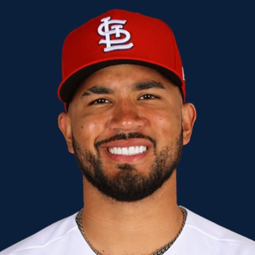

BASE KEEP
The Keep · The Diamond
Player File · 1B STL

Iván Herrera
#48 · 1B · St. Louis Cardinals · age 26 · B/T RR · 5' 11" / 220 lbs · MLB debut 2022 · Panama City, Panama
Keep avg86.14
# Boards21
BK Value1,426
Spread46–172
Hitting
| Year | G | AB | R | H | 2B | HR | RBI | SB | BB | SO | AVG | OBP | SLG | OPS |
|---|---|---|---|---|---|---|---|---|---|---|---|---|---|---|
| 2026 | 127 | 476 | 78 | 116 | 23 | 14 | 53 | 7 | 61 | 100 | .244 | .359 | .384 | .743 |
| 2025 | 107 | 388 | 54 | 110 | 13 | 19 | 66 | 8 | 43 | 84 | .284 | .373 | .464 | .837 |
The Keep#82BK 1,426
The Lineup#64BK 2,007
The Diamond#82BK 1,426
The 2026 line
Keep #82 · avg 86.14 · 21 boards · .244 / 14 HR / 7 SB / .743 OPS
Baseball Savant
Starcast · spray · pitch
Percentile ranks (Starcast) plus the official Savant spray chart for bats and pitch chart for arms. Open the full Baseball Savant page.
Batter · 2026
xwOBA
67
xBA
51
xSLG
36
xISO
33
xOBP
91
Barrels
50
Barrel %
29
EV
52
Max EV
83
Hard Hit %
48
K %
71
BB %
69
Whiff %
71
Chase %
56
Speed
18
Bat Speed
67
Squared Up
43
Swing Len
80
Hits spray chart
Minus
- Board spread 46–172 (126 ranks).
Board graph
Spread 46–172 · 21 sources
Every Board
Spread 46–172 · 21 sources
| Source | Rank |
|---|---|
| RotoGraphs Model | 46 |
| The Athletic | 73 |
| Razzball | 75 |
| RotoWire | 75 |
| FanGraphs The Board | 75 |
| Enos Slaughter | 75 |
| CBS Sports | 79 |
| Ottoneu | 80 |
| Baseball Prospectus | 81 |
| The Dynasty Dugout | 81 |
| Baseball America | 81 |
| ESPN | 82 |
| NFBC ADP | 82 |
| Mastersball | 82 |
| ATC ROS | 82 |
| Pitcher List | 87 |
| Fantasy Baseballers | 88 |
| Four-Seam Fantasy | 89 |
| Dynasty League Baseball | 95 |
| TDG Points | 129 |
| FantasyPros Dynasty ECR | 172 |
All players · The Keep · The Diamond · BK News · The Lineup · Pitchers · Calculator